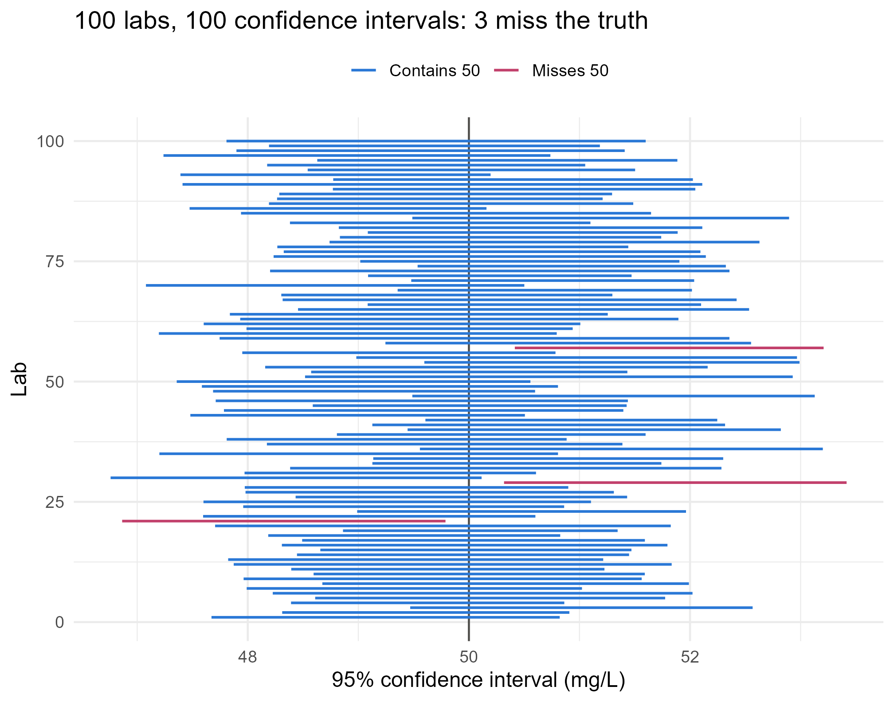

Module 0 · Lesson 12 of 14 Week 12 of 160 About 5–7 hours
Confidence intervals
An estimate together with an honest range of uncertainty
Build confidence intervals for means and proportions, interpret them correctly, use the t distribution, plan sample sizes, and make bootstrap intervals by resampling.
“The reactor’s average yield is 57.6%” sounds precise. But that’s from just 40 batches, and the long-run average of the process could easily be a few points different. A confidence interval reports an estimate together with a range of plausible values for the true parameter, like “57.6%, give or take about 3 points”. It’s the most useful single tool in this module, and you’ll use it in every analysis you ever write up.
Confidence intervals are how scientists and engineers say “here’s my answer, and here’s how sure I am” in one line. Once you start noticing them, you’ll see them in every lab report and paper.
In this lesson you’ll:
- build a confidence interval as an estimate plus or minus a margin of error
- explain what “95% confidence” really means (and what it doesn’t)
- use the t distribution, by hand and with
t.test() - compute an interval for a proportion
- plan how many measurements you need
- build a bootstrap interval by resampling
From a point estimate to an interval
A single value like \bar{x} is a point estimate. The last lesson showed that \bar{x} varies around \mu with standard error \sigma/\sqrt{n}, and that, by the central limit theorem, its sampling distribution is approximately normal. So in 95% of samples,
\bar{x} \text{ lies within } 1.96 \times \frac{\sigma}{\sqrt{n}} \text{ of } \mu .
Turn that around: in 95% of samples, \mu lies within 1.96\,\sigma/\sqrt{n} of \bar{x}. That gives the 95% confidence interval
\bar{x} \pm 1.96\,\frac{\sigma}{\sqrt{n}} .
Every confidence interval in this course has the same form:
\text{estimate} \pm \underbrace{\text{critical value} \times \text{standard error}}_{\text{margin of error}} .
Here’s an example where \sigma is known. Years of records show that the bag filler’s weights vary with a standard deviation of 0.3 kg. A sample of 36 bags has a mean of 24.92 kg:
xbar <- 24.92
sigma <- 0.3
n <- 36
margin <- qnorm(0.975) * sigma / sqrt(n)
c(lower = xbar - margin, upper = xbar + margin)
#> lower upper
#> 24.822 25.018The filler’s true average is plausibly anywhere from about 24.82 to 25.02 kg. Since the label promises 25 kg, it’s worth checking the machine’s setting.
What “95% confidence” means
This is the most misunderstood idea in introductory statistics, so it’s worth getting exactly right.
The 95% describes the method, not any single interval. If you took lots of random samples and built an interval from each one, about 95% of the intervals would contain the true \mu. Any particular interval either contains \mu or it doesn’t. You just don’t know which, and you’re “95% confident” in the sense that you used a method that works 95% of the time.
A simulation makes this concrete. Imagine 100 labs, each measuring a reference standard 25 times. The standard’s true concentration is 50 mg/L, and each lab builds a 95% interval from its own measurements:
Show the code
set.seed(12)
intervals <- t(replicate(100, {
y <- rnorm(25, mean = 50, sd = 4)
t.test(y)$conf.int
}))
ci <- data.frame(lab = 1:100, lower = intervals[, 1], upper = intervals[, 2])
ci$result <- ifelse(ci$lower <= 50 & ci$upper >= 50, "Contains 50", "Misses 50")
ggplot(ci, aes(y = lab, xmin = lower, xmax = upper, color = result)) +
geom_vline(xintercept = 50, color = "#52514e") +
geom_errorbar(orientation = "y", width = 0, linewidth = 0.7) +
scale_color_manual(values = c("Contains 50" = "#2a78d6", "Misses 50" = "#C2416C")) +
labs(title = paste0("100 labs, 100 confidence intervals: ", sum(ci$result == "Misses 50"), " miss the truth"),
x = "95% confidence interval (mg/L)", y = "Lab", color = NULL) +
theme_minimal(base_size = 12) +
theme(legend.position = "top")
Each horizontal line is one lab’s interval. The intervals move around because the measurements do, and a few miss the vertical line at the true value. In the long run, 5% of them will.
Three things a 95% confidence interval does not mean:
- It’s not the range containing 95% of the data. Individual values are much more spread out than the mean.
- It’s not the range where 95% of future sample means will fall.
- Strictly, it’s not “a 95% probability that \mu is in this interval”. \mu is a fixed number, so it’s either in or out. (Bayesian credible intervals, in Module 5, do mean that.)
A correct way to report it: “We are 95% confident that the filler’s mean weight is between 24.82 and 25.02 kg.”
Other confidence levels
A higher confidence level needs a larger critical value, so the interval gets wider. That’s the price of being more sure:
levels <- c(0.90, 0.95, 0.99)
data.frame(confidence = levels, critical_value = qnorm(1 - (1 - levels) / 2))
#> confidence critical_value
#> 1 0.90 1.644854
#> 2 0.95 1.959964
#> 3 0.99 2.575829The other way to get a narrower interval is a bigger sample. Because the standard error shrinks like 1/\sqrt{n}, four times the data halves the width.
Your turn. The filler’s SD is \sigma = 0.3 kg. After a repair, a sample of 36 bags has a mean of 25.05 kg. Compute the 95% confidence interval, returning the lower and upper limits.
The margin of error is qnorm(0.975) * sigma / sqrt(n).
xbar <- 25.05
sigma <- 0.3
n <- 36
margin <- qnorm(0.975) * sigma / sqrt(n)
c(xbar - margin, xbar + margin)About 24.95 to 25.15 kg. The interval now includes 25 kg comfortably.
When σ is unknown: the t distribution
In practice you almost never know \sigma, so you estimate it with s. That adds extra uncertainty, especially in small samples, and the normal critical value 1.96 becomes too small. The fix was found by William Sealy Gosset, a chemist at the Guinness brewery in Dublin, who had to judge the quality of barley and yeast from very small samples. He published it in 1908 under the pen name “Student”.
If the population is normal,
t = \frac{\bar{x} - \mu}{s / \sqrt{n}}
follows a t distribution with n - 1 degrees of freedom. It looks like the standard normal, but with heavier tails, and the fewer the degrees of freedom, the heavier the tails. With more data, it gets closer and closer to normal:
df <- c(2, 5, 10, 30, 100)
data.frame(df = df, t_critical = round(qt(0.975, df), 3), normal = round(qnorm(0.975), 3))
#> df t_critical normal
#> 1 2 4.303 1.96
#> 2 5 2.571 1.96
#> 3 10 2.228 1.96
#> 4 30 2.042 1.96
#> 5 100 1.984 1.96So the 95% interval for a mean, when \sigma is unknown, is
\bar{x} \pm t^*_{n-1} \, \frac{s}{\sqrt{n}} ,
where t^*_{n-1} is qt(0.975, df = n - 1). Here it is for the mean yield of our batches, step by step:
x <- batches$yield_pct
n <- length(x)
se <- sd(x) / sqrt(n)
t_star <- qt(0.975, df = n - 1)
c(estimate = mean(x), lower = mean(x) - t_star * se, upper = mean(x) + t_star * se)
#> estimate lower upper
#> 57.64750 54.52947 60.76553t.test() does it all at once:
t.test(batches$yield_pct)
#>
#> One Sample t-test
#>
#> data: batches$yield_pct
#> t = 37.396, df = 39, p-value < 2.2e-16
#> alternative hypothesis: true mean is not equal to 0
#> 95 percent confidence interval:
#> 54.52947 60.76553
#> sample estimates:
#> mean of x
#> 57.6475For now, look at the last lines of the output: the 95% confidence interval and the sample mean. The rest is a hypothesis test, the topic of the next lesson. To pull out just the interval, use t.test(x)$conf.int. To change the level, use t.test(x, conf.level = 0.99).
ImportantWhen can you trust a t interval?
- Independence. The data come from a random sample or a randomized experiment, and the observations don’t influence each other.
- Normality, or a large enough sample. For small samples (n < 30), the population should be roughly normal, so check a histogram or Q-Q plot for strong skew and outliers. For larger samples the central limit theorem covers moderate skew, but extreme outliers still cause trouble.
A t interval from a biased sample is precisely wrong. No formula can fix how the data were collected.
Your turn. What’s the t critical value for a 95% interval from 8 replicate measurements?
qt(0.975, df = ...), with n - 1 degrees of freedom.
qt(0.975, df = 7)About 2.365, noticeably larger than 1.96. Small samples pay a price for estimating \sigma.
Your turn. Here are those 8 replicate measurements of a standard solution, in mg/L. Compute the 95% confidence interval for its true concentration with the formula. Then compare it with t.test().
se <- sd(x) / sqrt(n) and t_star <- qt(0.975, df = n - 1).
x <- c(10.2, 10.5, 9.9, 10.1, 10.3, 10.4, 10.0, 10.2)
n <- length(x)
se <- sd(x) / sqrt(n)
t_star <- qt(0.975, df = n - 1)
c(mean(x) - t_star * se, mean(x) + t_star * se)Your turn. Return the 95% confidence interval for the mean purity of the batches. (batches is ready.)
t.test(...)$conf.int pulls out the interval.
t.test(batches$purity_pct)$conf.intYour turn. Return the 99% confidence interval for the mean yield. Is it wider or narrower than the 95% one (54.5% to 60.8%)?
t.test() has a conf.level argument.
t.test(batches$yield_pct, conf.level = 0.99)$conf.intAn interval for a proportion
For a proportion, the estimate is \hat{p}, and its standard error is estimated by \sqrt{\hat{p}(1-\hat{p})/n}, so
\hat{p} \pm z^* \sqrt{\frac{\hat{p}(1-\hat{p})}{n}} .
It’s reliable when the sample has at least 10 successes and 10 failures. An inspection of 400 drums finds 22 that leak:
p_hat <- 22 / 400
se <- sqrt(p_hat * (1 - p_hat) / 400)
c(estimate = p_hat, lower = p_hat - 1.96 * se, upper = p_hat + 1.96 * se)
#> estimate lower upper
#> 0.05500000 0.03265793 0.07734207The line’s true leak rate is plausibly between about 3.3% and 7.7%. R’s prop.test(22, 400) gives a slightly different interval, because it uses a more accurate method (the Wilson score interval, with a continuity correction). That matters most for small samples, and for proportions close to 0 or 1, like this one.
Your turn. A new purification step is tried on 80 batches, and 52 of them reach 99.5% purity. Compute the 95% confidence interval for the step’s success rate with the formula.
\text{SE} = \sqrt{\hat{p}(1 - \hat{p})/n}, with n = 80.
p_hat <- 52 / 80
se <- sqrt(p_hat * (1 - p_hat) / 80)
c(p_hat - 1.96 * se, p_hat + 1.96 * se)How many measurements do you need?
Before you collect any data, you can choose n to get the margin of error E you want. For a mean, solve E = z^* \sigma/\sqrt{n}:
n = \left(\frac{z^*\,\sigma}{E}\right)^2 ,
using a guess for \sigma from earlier work or a small pilot study, and always rounding up. How many titrations do you need to pin a concentration down to within 0.05 mol/L, if single titrations vary with an SD of about 0.12 mol/L?
ceiling((qnorm(0.975) * 0.12 / 0.05)^2)
#> [1] 23For a proportion, n = (z^*)^2\,p(1-p)/E^2. If you have no idea what p is, use p = 0.5, which gives the largest (safest) answer. An opinion poll with a margin of error of 3 percentage points needs
ceiling(qnorm(0.975)^2 * 0.5 * 0.5 / 0.03^2)
#> [1] 1068about 1,000 people, whether the country has 5 million voters or 300 million. Precision depends on the size of the sample, not the size of the population.
Your turn. You want to estimate the reactor’s mean yield to within 2 percentage points, with 95% confidence. Batch yields vary with an SD of about 10 points. How many batches do you need?
n = (z^*\sigma/E)^2, rounded up with ceiling().
ceiling((qnorm(0.975) * 10 / 2)^2)97 batches, more than twice our 40.
Your turn. A study will estimate a defect rate that’s probably around 4%, to within 1 percentage point (0.01), with 95% confidence. How many items must it inspect?
n = (z^*)^2\,p(1-p)/E^2 with p = 0.04 and E = 0.01, rounded up.
ceiling(qnorm(0.975)^2 * 0.04 * 0.96 / 0.01^2)1,476 items. Using p = 0.5 instead would ask for 9,604, so a sensible guess for p saves a lot of work.
The bootstrap: intervals without formulas
What if you want an interval for a median, which has no simple standard-error formula? The bootstrap offers a brilliant workaround. Your sample is your best picture of the population, so you resample from the sample itself, with replacement, and see how much the statistic varies:
- Draw n values from your data, with replacement (some values appear twice, some not at all).
- Compute the statistic for this “bootstrap sample”.
- Repeat thousands of times.
- The middle 95% of the bootstrap statistics is a 95% percentile bootstrap interval.
x <- batches$yield_pct
set.seed(12)
boot_medians <- replicate(10000, median(sample(x, replace = TRUE)))
quantile(boot_medians, c(0.025, 0.975))
#> 2.5% 97.5%
#> 56.10 59.85For the mean, the bootstrap gives almost the same answer as the t interval:
boot_means <- replicate(10000, mean(sample(x, replace = TRUE)))
quantile(boot_means, c(0.025, 0.975))
#> 2.5% 97.5%
#> 54.5350 60.5775
t.test(x)$conf.int
#> [1] 54.52947 60.76553
#> attr(,"conf.level")
#> [1] 0.95The bootstrap isn’t magic: it needs a reasonably large, representative sample, and it struggles with extreme statistics like the maximum. Module 4 covers when it works, and better versions of it.
Challenge round
Challenge 1 · Check the coverage. Does a 95% t interval really capture the truth 95% of the time? Simulate 1,000 samples of size 10 from a standard normal distribution (true mean 0), and find the proportion of their 95% intervals that contain 0.
The interval contains 0 when its lower limit is below 0 and its upper limit is above 0: ci[1] < 0 & ci[2] > 0.
set.seed(10)
covers <- replicate(1000, {
ci <- t.test(rnorm(10))$conf.int
ci[1] < 0 & ci[2] > 0
})
mean(covers)Challenge 2 · A bootstrap interval. Build a 95% percentile bootstrap interval for the median purity of the batches.
Each bootstrap median is median(sample(x, replace = TRUE)).
The interval is quantile(boot_medians, c(0.025, 0.975)).
x <- batches$purity_pct
set.seed(11)
boot_medians <- replicate(10000, median(sample(x, replace = TRUE)))
quantile(boot_medians, c(0.025, 0.975))Quick quiz
1. What does “95% confidence” mean?
The confidence level describes how often the procedure works across repeated samples.
2. You switch from a 95% to a 99% confidence interval, with the same data. The interval…
To be more confident of catching the parameter, you need a wider net: 2.576 instead of 1.96.
3. You collect four times as much data. Roughly what happens to the width of the interval?
The width is proportional to the standard error, s/\sqrt{n}, and \sqrt{4} = 2.
4. Why use the t distribution instead of the normal for an interval for a mean?
Estimating \sigma adds variability, which the heavier-tailed t distribution accounts for. With large samples, the t and normal critical values are nearly the same.
5. A 95% confidence interval for the mean yield is 54.5% to 60.8%. Which statement is correct?
The interval is about the process mean, not individual batches or future sample means. (Individual batches range from 31% to 75%!)
6. An engineer samples only the batches that “looked fine” on the control screen. Their 95% interval is very narrow. What’s the biggest concern?
Intervals measure sampling variability, not bias. A hand-picked sample can miss the truth by far more than any margin of error.
Wrap-up
You can now put an honest error bar on any estimate. Here’s what you can do:
- Build intervals: estimate ± critical value × standard error.
- Interpret them right: “95% confidence” means the method catches the true parameter in 95% of samples. A single interval either contains it or doesn’t.
- Trade off: higher confidence means wider intervals; larger samples mean narrower ones, at a rate of 1/\sqrt{n}.
- Use t when σ is unknown: \bar{x} \pm t^* s/\sqrt{n}, or simply
t.test(). It needs independence and, for small samples, a roughly normal population. - Handle proportions: \hat{p} \pm z^*\sqrt{\hat{p}(1-\hat{p})/n}, with at least 10 successes and 10 failures.
- Plan ahead: n = (z^*\sigma/E)^2 for a mean, or (z^*)^2 p(1-p)/E^2 for a proportion, always rounded up.
- Bootstrap when there’s no formula, and remember: no interval can fix a biased sample.
TipPractice in RStudio (optional, about an hour)
Work in week12.R.
- Intervals by group. For each catalyst, compute the mean yield and its 95% t interval. With dplyr:
summarise(mean = mean(yield_pct), lower = t.test(yield_pct)$conf.int[1], upper = t.test(yield_pct)$conf.int[2]). - Plot them. Draw the intervals with
geom_pointrange(aes(x = catalyst, y = mean, ymin = lower, ymax = upper)). Which catalysts’ intervals overlap? Why are some wider than others? - When the t interval struggles. Repeat Challenge 1 with samples of size 10 from a strongly skewed population,
rexp(10), whose true mean is 1. What’s the coverage now? Try n = 30 and n = 100. - Compare methods for a proportion. For 22 leaky drums out of 400, compare the formula interval with
prop.test(22, 400)$conf.intandbinom.test(22, 400)$conf.int. Then try 2 out of 50. Which methods disagree most, and why? - Write it up. In two sentences, report the mean purity with its interval, as you would in a lab report, without using the word “probability”.
NoteKey words from this lesson
- Point estimate
- A single number used to estimate a parameter, such as \bar{x} for \mu.
- Confidence interval
- A range of plausible values for a parameter, from a method that captures the parameter a stated percentage of the time.
- Confidence level
- The long-run percentage of intervals that contain the true parameter, such as 95%.
- Margin of error
- The amount added to and subtracted from the estimate: a critical value times the standard error.
- Critical value
- The multiplier that sets the confidence level, such as 1.96 for 95% with a normal distribution.
- t distribution
- A bell-shaped distribution with heavier tails than the normal, used when \sigma is estimated from the data.
- Degrees of freedom
- The parameter of the t distribution. For a single mean, it’s n - 1.
- Bootstrap
- Resampling the observed data with replacement, to approximate a statistic’s sampling distribution.
NoteWant to read more?
- Introduction to Modern Statistics, “Confidence intervals with bootstrapping” and “Inference for a single mean”. Intervals built both by resampling and with the t distribution.
- Seeing Theory, “Frequentist Inference”. Watch confidence intervals succeed and fail as you draw samples.